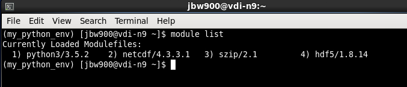

Python on the VDI: Customising (Part II)¶
In this notebook:¶
- Install local user-specific packages
- Python virtual environments
For more detailed information and options, please see the Python section of the VDI User Guide.
Installing your own Python packages¶
To install additional Python packages locally, the easiest way is using pip.
First, make sure you have loaded Python. Then load the appropriate pip module (i.e., Python-3.5) . In this example, we are using Python 3.5.2:
$ module load python3
$ module load pip/8.1.2-py3.5
Next, use pip install followed by the Python package: In this simple example we are downloading a program for units called Pint.
$ pip install pint --user
Let’s test that Pint was installed correctly.
- Start
iPythonfrom the command line:
$ ipython
- Enter the following:
>>> from pint import UnitRegistry
>>> ureg = UnitRegistry()
>>> distance = 24.0 * ureg.meter
>>> print(distance)
>>> time = 8.0 * ureg.second
>>> print(time)
For a complete list of pip options:
$ pip help
Pip list and show can be quite useful.
$ pip list
Will show you a list of all the installed packages.
$ pip show <package>
Will show information about a particular installed package.

Python Virtual Environments¶
What is it?
Python3’s venv is a tool that helps manage multiple Python projects by creating isolated environments for them.
Why use it?
- Keeps your home space clean and manageable.
- Isolate system dependencies.
- Different environments can be defined for different projects or analysis workflows.
- e.g., Project 1 requires NumPy v1.10 but Project 2 has a dependency that needs NumPy v1.9)
- This is particularly helpful when some libraries conflict with each other for some workflows but not others.
- If something breaks or goes wrong within an environment, you can just delete the virtual environment directory and start again.
Creating a virtual environment
First, load python module
$ module load python3
Then, make a home for your virtual environments and create the virtual environment
Create the environment using the venv command followed by a name:
$ python3 -m venv /path/to/new/virtual/environment
For example, if we called the environment “my_python_env” this step creates a folder named my_python_env. When first creating a new environment, it inherits the python module loaded into your path (e.g., python3/3.5.2 in this example) and installs a local version of ‘pip’.
Working within the virtual environment (activating/deactivating)
To activate the virtual environment:
$ source <virtual_environment>/bin/activate

Let’s create a customised environment that includes several of the common data/science tools
Installing new (and simple) packages
To install additional packages within the virtual environment, we can again use pip install.
pip list to see what packages are copied into the virtual environment upon creation (should show a very short list of packages). Make sure you have activated the environment otherwise this will show a much longer list of global packages.NumPy
$ pip install numpy
Can also install several pacakges at once:
$ pip install scipy matplotlib cython
$ pip install ipython jupyter
Installing more complicated packages¶
Installing Python packages that have other library dependencies (e.g., NetCDF, h5py, etc.)
Example: Installing NetCDF Python
Starting in a new terminal window, load the Python module:
$ module purge
$ module load python3
Next, load the additional required libraries:
$ module load netcdf/4.3.3.1
$ module load hdf5/1.8.14
$ module load szip/2.1

Then activate the virtual environment:
$ source <virtual_environment>/bin/activate
And finally, again use pip install:
$ pip install netcdf4
To test whether the install was successful, try:
$ python import netCDF4
If you get any errors, the install was unsuccessful.
Additional packages¶
In preparation for additional NCI Notebooks, let’s install a few more packages that will be needed later on.
You should already be within your virtual environment. If you are, skip this next step but if not:
Starting in a new terminal window, load the Python module:
$ module load python3
Activate your virtual environment:
$ source <virtual_environment>/bin/activate
Next, load the some additional required libraries (required for Shapely and Cartopy):
$ module load proj/4.9.3
$ module load geos/3.5.0
Siphon
Install Siphon:
$ pip install siphon
Pandas
Install Pandas:
$ pip install pandas
Shapely
Install Shapely:
$ pip install shapely
Cartopy
In the same window used for Shapely, install the Pillow library:
$ pip install pillow
Then install Cartopy:
$ pip install cartopy==0.13.0
cartopy from within your virtual environment, you will need the geos/3.5.0 module loaded.Exiting a virtual environment¶
To deactivate (leave the virtualenv, not delete it):
$ deactivate
Additional pip options (for reference)¶
Upgrade:
$ pip install <package> --upgrade
Install specific versions:
$ pip install numpy==1.11.0
Install from a list:
You can also install packages from a ‘.txt’ file list. This can be particularly helpful for collaborations where exact package versions are important for sharing and developing code.
$ pip install --requirement <textfile.txt>
OR:
$ pip install -r <textfile.txt>
For more information on using pip:
$ pip install --help